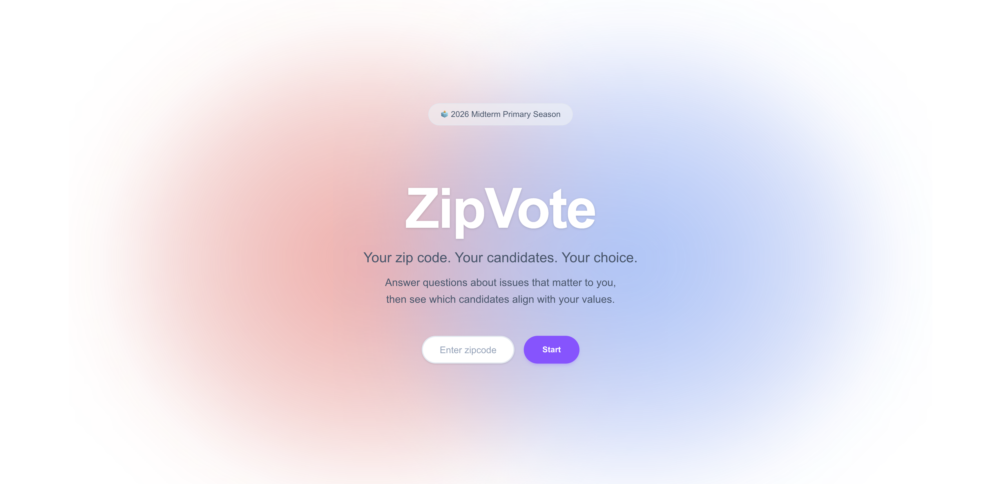
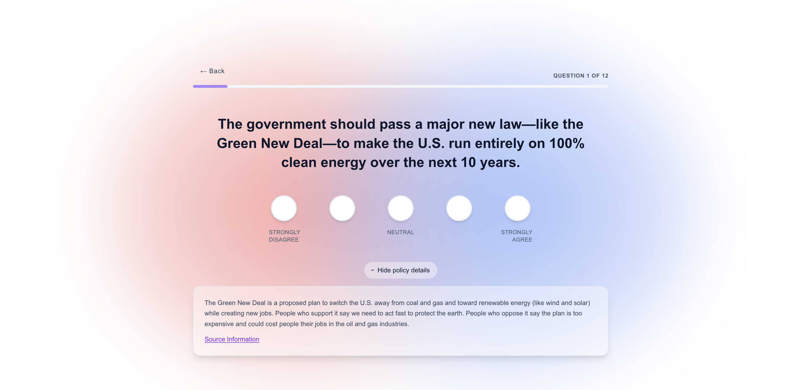
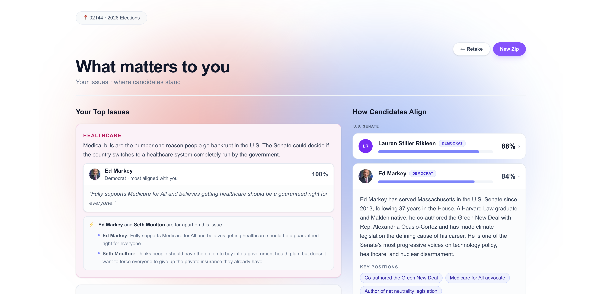

ZipVote was created to make local elections more accessible and less intimidating, especially for first-time voters. What began as a personal project has since grown into part of the Harvard Kennedy School's Voter Engagement programming.
ZipVote is a voter-candidate matching tool designed to help voters navigate the upcoming midterm elections with confidence. Users enter their zip code, complete a short policy survey, and receive a breakdown of local candidates based on their responses.
While presidential elections capture national attention, midterm elections carry immense
local consequences yet often suffer from lower turnout, especially among first-time voters.
Because local ballot information is decentralized and deeply individualized, independent
research becomes a significant barrier to entry. ZipVote was made in hopes to solve this
problem by making voter-candidate alignment straightforward.
This challenge presented a perfect opportunity to leverage an agentic implementation.
The agents synthesize this information behind the scenes to craft a personalized
experience for each user.

The user is presented with a simple, straightforward interface designed to minimize friction. Users simply enter their zip code and the platform fetches every relevant race and candidate for that location, generating a survey based on those candidates' platforms.

Instead of overwhelming users with dense, multi-platform race details, each prompt presents a single policy that is stripped of political jargon and affiliations.
For each policy, users respond using a simple Likert scale ranging from "Strongly Disagree" to "Strongly Agree." This format allows users to quickly weigh in using a familiar format.
Every question includes an option to view additional policy details. If a user wants a better understanding of a stance before answering, they can expand the section to read the original context, what critics say, and follow source links.

Results surface the specific policy areas that drove the match score, so voters understand which of their priorities carried the most weight.
The user is given a race-by-race breakdown showing exactly how their survey answers align with the actual candidates on their ballot. Beyond just an alignment score, voters can click into each candidate to explore their biography, review their key positions, and follow source links.
The Scout Agent acts as the platform's dedicated researcher. This agent identifies the specific races and candidates, using Ballotpedia and Wikipedia to gather comprehensive political platforms, candidate statements, and key biographical information.
Once the raw data is gathered, the Wedge Agent builds the survey. It analyzes the research and identifies the "wedge issues". The agent compares candidate statements on shared topics and analyzes them for policy contradictions or sentiment differences. Issues with strong polarity scores become the foundation of the survey.
The development of ZipVote offered profound lessons in both AI architecture and civic tech
design.
Firstly, the project demonstrated that while an agentic system is incredibly effective
at delivering the intended user experience, dynamically leveraging agents as the core engine
for every user is computationally expensive. To scale this platform sustainably I had to
make some trade-offs, such as pre-generating race data or caching frequent candidate
comparisons, to keep operational costs manageable.
Beyond the technology, the development process reinforced the delicate balancing act
required in civic user experience. Creating an engaging, accessible tool for first-time
voters meant prioritizing simplicity and clarity, while still being mindful the platform
never
oversimplified the democratic process to the point of losing critical nuance.